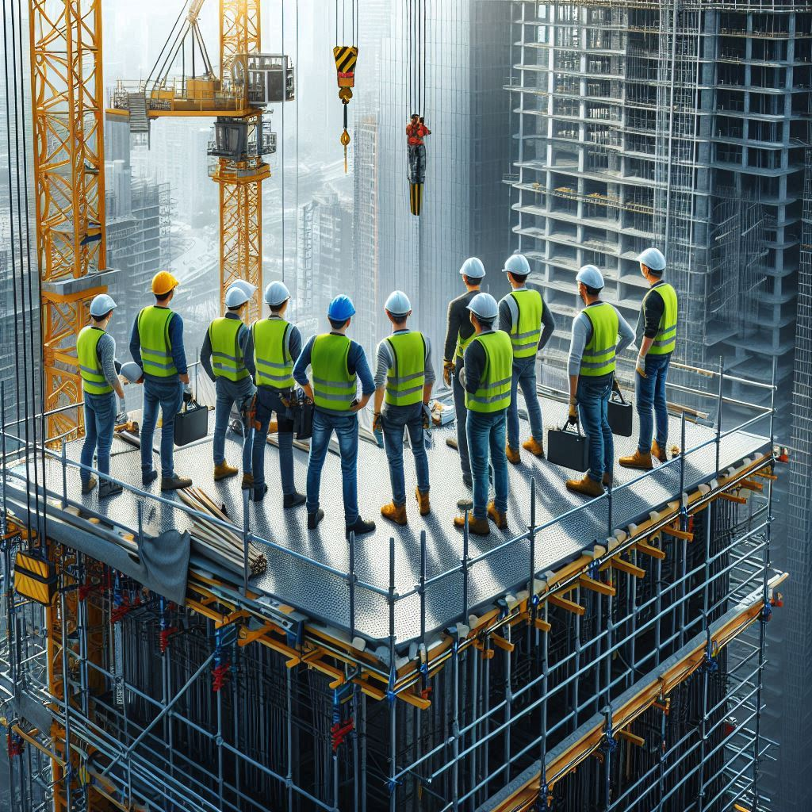

期末實作測試 學號:91135102 姓名:劉政諺
假設工程
鷹架
工作原理
鷹架（Scaffolding）是建築工程中常用的臨時性結構，用於支撐工人、材料和設備，以便於施工、
維修或修建建築物。鷹架提供了工作平台和安全通道，使工人可以在高空進行作業，同時也確保了他們的安全。
結構和組件
- 主要結構：鷹架的主體結構由支柱（立杆）、橫梁（横杆）、斜杆、水平板和斜板等組件組成。
這些部件可以是金屬（如鋼材或鋁合金）或木材製成，具體材料取決於需要承載的重量和施工環境。
- 搭建方式：鷹架的搭建通常是根據設計圖紙和搭建計劃進行的，以確保結構穩固和安全。
搭建過程中會考慮到支撐的位置、高度、荷載要求和安全標準。
- 安全設施：為了保證工人的安全，鷹架通常配備有防滑平台、安全扶手、護欄、防滑梯子等安全設施。
這些措施有助於防止工人從高處摔落或意外事故的發生。
- 調整和移動：鷹架設計通常可以調整高度和位置，以適應不同部位的施工需求。
有些鷹架設計還可以移動，便於在建築物不同部分使用。

類型
- 單桿鷹架：單桿鷹架由單根立柱支撐，適用於較小的工作範圍和輕量級工作。
- 檐板鷹架：檐板鷹架特點是支撐梁的鷹架，通常用於搭建在檐頭上的工作平台。
- 懸吊鷹架：懸吊鷹架懸掛在建築物外部，適用於外牆的高空工作。
- 系統鷹架：系統鷹架是預製和模塊化的鷹架系統，通常由標準組件組裝而成，搭建速度快且結構穩固。